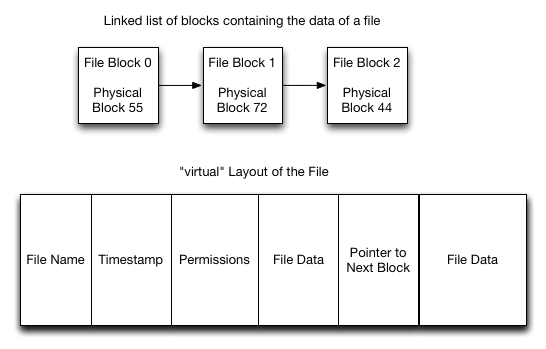
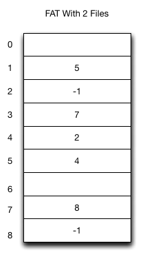
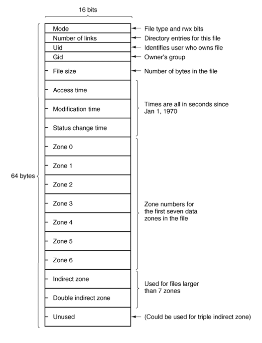
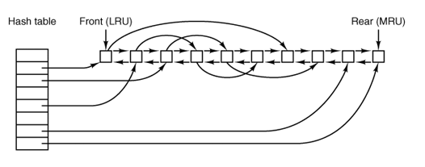
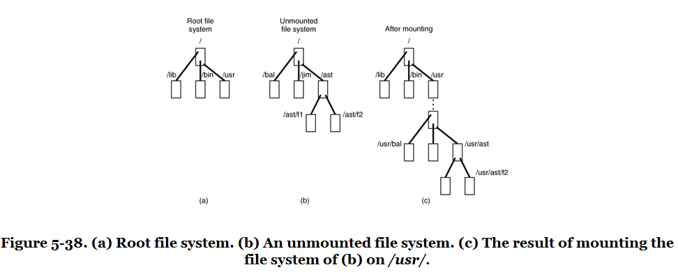

Implementing Files and Folders
Implementing Files and Folders
How files and folders are implemented in a storage medium can greatly depend upon the physical characteristics and capabilities of that medium.
For example, on tape-drives, CD/DVD/Blu-Ray, or write-once media, files and folders are stored contiguously with no fragmentation. All of the information about the filesystem can be held in a TOC (Table Of Contents).
For filesystems with files that have a finite lifetime, such as on flash media, hard disks, SSDs, and others, the layout of files and folders must be maintained in a more complex way.
Among these more advanced methods are linked lists and i-nodes.
To manage free-space, objects like bit-maps and linked lists are possibilities.
Linked-Lists
 image
Linked-Lists
Pros:
No external fragmentation of files.
Simple to implement
Sequential access is very simple.
Cons:
Has internal fragmentation of the last block unless the last block is used completely.
Random access in the file is difficult because for N blocks K-1 blocks must be read to find block K.
Storage available in a single block is not a power of two. Most programs send data to the filesystem in as buffers of sizes that are powers of two.
File Allocation Tables (FAT)
 image
File Allocation Tables (FAT)
FAT based filesystems improve over linked list filesystems by moving the linked list into a centralized table called the FAT.
At FS mount time, the FAT is loaded into main memory. Random access is fast even though traversal is still needed.
Pros:
Implementing a FAT FS is simple. Managing free space and disk layout is simple.
FAT can be loaded into memory for fast and simple operations.
Because blocks don’t contain pointers, the entire block can be used for data.
Cons:
For large filesystems the FAT can become large and consume a lot of memory.
inodes
inodes are the fundamental structures of a UNIX filesystem
inodes have the following attributes:
File Ownership - user, group
File Mode - rwx bits for each of user, group, and others
Last access and modified timestamps
File size in bytes
Device id
Pointers to blocks on the storage device for the file or folder’s contents
Minix - inode
 image
Minix - inode
The first 7 “zones” point to the first 7 blocks of the file.
The “indirect zone” points to another block that contains a list of additional zones.
This has the advantage that the file can begin to be read quickly with the initial set of blocks available.
Also, the indirect zone allows for relatively fast random access by traversing the indirect blocks like a tree.
The pointer to a “double indirect” zone is a list of a list of zones.
The first few zones can address 7KB. The indirect zones can address up to 64MB. The double indirect zones can address more than 4GB.
inodes
The strategy of using indirect, double indirect, and even triple indirect blocks is a very successful implementation strategy
This approach is also used by ext2 / ext3 / ext4 in Linux.
Block Caches
To improve the performance of a filesystem, and to make disk scheduling algorithms more realizable, most operating systems implement some kind of block cache.
The block cache allows for read-ahead and write-behind. It also allows for lower latency I/O operations.
With a block cache, the write() system call for instance only needs to complete modifications to the cache before returning. The operating system can complete the operation on disk in a background thread.
Without this cache, the system call would not be able to return until the write had been committed to disk.
Block Caches
In Minix, the block cache is implemented with an LRU policy. The cache maintains a linked list of buffers from most recently to least recently used
 image
Block Caches
Important parameters of any block cache are:
The size of the cache in physical memory
The delay before committing ’dirty’ items in the cache to disk
The larger the cache, the better the filesystem will likely perform, but this can come at the cost of available memory for programs.
The larger the delay before writing items to the disk, the better the disk allocation and scheduling decisions the operating system can make.
The shorter the delay before writing to disk, the greater the guarantee in the presence of failure that modifications will be persisted to disk.
Folders and Path Traversal
In all but the most simple filesystems, there is a concept of a folder and a path.
In UNIX operating systems, folder entries are held within inodes that have the filetype in the mode set to type directory.
The contents of the inode then are a list of filenames and pointers to the inodes of those files and/or folders.
Resolving paths involve accessing a root folder, and accessing each folder recursively until reaching a file or finding the folder to be invalid.
Path Traversal
An example of path traversal. When traversing paths, the path may cross into different filesystems.
 image
Virtual Filesystems / VFS
Aside from files and folders there are other things like named pipes, domain sockets, symbolic and hard links that need to be handled by the filesystem.
Rather than have the semantics of these implemented in each filesystem implementation, many OS architectures include a virtual filesystem or VFS.
The VFS stands between the OS kernel and the filesystem implementation.
Virtual Filesystems / VFS
The VFS can help adapt both foreign filesystems (such as VFAT) by producing a contract that these implementations can adapt to.
The VFS can also help reduce code duplication between FS implementations by providing common structures and handling shared behavior:
Path traversal
Handling named pipes, domain sockets, etc…
Managing file handles and file locking
Structures and functions for the block cache.
Structures and functions for accessing storage devices
Virtual Filesystems and Stacking
In some VFS implementations it is possible to stack filesystems on top of each other.
A great example of this in Linux is UMSDOS: the base VFAT filesystem does not have support for users, groups, security or extended attributes. By creating special files on VFAT and then hiding them, UMSDOS can adapt VFAT to be a UNIX-like filesystem
Another great example of this is UnionFS. It allows two filesystems to be transparently overlaid.
Virtual Filesystems and User-Mode
Because VFS provides a contract for a filesystem to implement, it is simpler for unique filesystems to be implemented. Good examples include:
Proc - process and kernel metadata, typically mounted under ’/proc’
SysFs - exposes block and character device files to user mode, typically mounted under ’/dev’
FUSE - provides infrastructure to redirect calls to and from the VFS to and from user mode programs.
User-Mode Filesystems
The advent of user-mode filesystems in popular operating systems (they existed in less popular operating systems for a while) has led to a great deal of new filesystem development.
The two most popular systems are FUSE for Linux / MacOSX, and other UNIX-like systems, and Dokan for Windows systems.
These frameworks have been greatly successful in large part because they help make the task of systems development much easier.
User-Mode Filesystems
Development in a monolithic kernel can be very challenging. Crashes can bring the entire system down, stopping and restarting components may not be possible, and often debugging is limited to logs.
With user-mode development, it is possible to make use of a debugger in most cases.
Because of these advantages systems like FUSE and Dokan have become very popular.
Other areas of systems that were traditionally kernel mode only have moved to user-mode systems to ease development and improve architecture. In Windows, the display manager, and much of the driver framework has moved to user-mode.
Example pass-through FUSE Filesystem
void ExampleFS::AbsPath(
char dest[PATH_MAX], const char *path) {
strcpy(dest, _root);
strncat(dest, path, PATH_MAX);
}
void ExampleFS::setRootDir(const char *path) {
printf("setting FS root to: %s\n", path);
_root = path;
}
int ExampleFS::Getattr(
const char *path, struct stat *statbuf) {
char fullPath[PATH_MAX];
AbsPath(fullPath, path);
printf("getattr(%s)\n", fullPath);
return RETURN_ERRNO(lstat(fullPath, statbuf));
}
Example pass-through FUSE Filesystem
int ExampleFS::Readlink(
const char* path, char* link, size_t size){
printf("readlink(path=%s, link=%s, size=%d)\n",
path, link, (int)size);
char fullPath[PATH_MAX];
AbsPath(fullPath, path);
return RETURN_ERRNO(readlink(fullPath, link, size));
}
int ExampleFS::Mknod(
const char *path, mode_t mode, dev_t dev) {
printf("mknod(path=%s, mode=%d)\n", path, mode);
char fullPath[PATH_MAX];
AbsPath(fullPath, path);
//handles creating FIFOs, regular files, etc...
return RETURN_ERRNO(mknod(fullPath, mode, dev));
}
Example pass-through FUSE Filesystem
int ExampleFS::Mkdir(const char *path, mode_t mode) {
printf("**mkdir(path=%s, mode=%d)\n", path, (int)mode);
char fullPath[PATH_MAX];
AbsPath(fullPath, path);
return RETURN_ERRNO(mkdir(fullPath, mode));
}
int ExampleFS::Unlink(const char *path) {
printf("unlink(path=%s\n)", path);
char fullPath[PATH_MAX];
AbsPath(fullPath, path);
return RETURN_ERRNO(unlink(fullPath));
}
int ExampleFS::Rmdir(const char *path) {
printf("rmkdir(path=%s\n)", path);
char fullPath[PATH_MAX];
AbsPath(fullPath, path);
return RETURN_ERRNO(rmdir(fullPath));
}
Example pass-through FUSE Filesystem
int ExampleFS::Symlink(const char *path, const char *link) {
printf("symlink(path=%s, link=%s)\n", path, link);
char fullPath[PATH_MAX];
AbsPath(fullPath, path);
return RETURN_ERRNO(symlink(fullPath, link));
}
int ExampleFS::Rename(const char *path, const char *newpath) {
printf("rename(path=%s, newPath=%s)\n", path, newpath);
char fullPath[PATH_MAX];
AbsPath(fullPath, path);
return RETURN_ERRNO(rename(fullPath, newpath));
}
Example pass-through FUSE Filesystem
int ExampleFS::Link(const char *path, const char *newpath) {
printf("link(path=%s, newPath=%s)\n", path, newpath);
char fullPath[PATH_MAX];
char fullNewPath[PATH_MAX];
AbsPath(fullPath, path);
AbsPath(fullNewPath, newpath);
return RETURN_ERRNO(link(fullPath, fullNewPath));
}
int ExampleFS::Chmod(const char *path, mode_t mode) {
printf("chmod(path=%s, mode=%d)\n", path, mode);
char fullPath[PATH_MAX];
AbsPath(fullPath, path);
return RETURN_ERRNO(chmod(fullPath, mode));
}
Example pass-through FUSE Filesystem
int ExampleFS::Chown(const char *path, uid_t uid, gid_t gid) {
printf("chown(path=%s, uid=%d, gid=%d)\n",
path, (int)uid, (int)gid);
char fullPath[PATH_MAX];
AbsPath(fullPath, path);
return RETURN_ERRNO(chown(fullPath, uid, gid));
}
int ExampleFS::Truncate(const char *path, off_t newSize) {
printf("truncate(path=%s, newSize=%d\n", path, (int)newSize);
char fullPath[PATH_MAX];
AbsPath(fullPath, path);
return RETURN_ERRNO(truncate(fullPath, newSize));
}
int ExampleFS::Utime(const char *path, struct utimbuf *ubuf) {
printf("utime(path=%s)\n", path);
char fullPath[PATH_MAX];
AbsPath(fullPath, path);
return RETURN_ERRNO(utime(fullPath, ubuf));
}
Example pass-through FUSE Filesystem
int ExampleFS::Open(const char *path,
struct fuse_file_info *fileInfo) {
char fullPath[PATH_MAX];
AbsPath(fullPath, path);
fileInfo->fh = open(fullPath, fileInfo->flags);
return 0;
}
int ExampleFS::Read(const char *path, char *buf,
size_t size, off_t offset, struct fuse_file_info *fileInfo) {
return RETURN_ERRNO(pread(fileInfo->fh, buf, size, offset));
}
int ExampleFS::Write(const char *path, const char *buf,
size_t size, off_t offset, struct fuse_file_info *fileInfo) {
return RETURN_ERRNO(pwrite(fileInfo->fh, buf, size, offset));
}
Example pass-through FUSE Filesystem
int ExampleFS::Statfs(const char *path, struct statvfs *statInfo) {
printf("statfs(path=%s)\n", path);
char fullPath[PATH_MAX];
AbsPath(fullPath, path);
return RETURN_ERRNO(statvfs(fullPath, statInfo));
}
int ExampleFS::Flush(const char *path, struct fuse_file_info *fileInfo) {
printf("flush(path=%s)\n", path);
//noop because we don't maintain our own buffers
return 0;
}
int ExampleFS::Release(const char *path, struct fuse_file_info *fileInfo) {
printf("release(path=%s)\n", path);
return 0;
}
Example pass-through FUSE Filesystem
int ExampleFS::Fsync(const char *path, int datasync, struct fuse_file_info *fi) {
printf("fsync(path=%s, datasync=%d\n", path, datasync);
if(datasync) {
//sync data only
return RETURN_ERRNO(fdatasync(fi->fh));
} else {
//sync data + file metadata
return RETURN_ERRNO(fsync(fi->fh));
}
}
int ExampleFS::Setxattr(const char *path, const char *name, const char *value, size_t size, int flags) {
printf("setxattr(path=%s, name=%s, value=%s, size=%d, flags=%d\n",
path, name, value, (int)size, flags);
char fullPath[PATH_MAX];
AbsPath(fullPath, path);
return RETURN_ERRNO(lsetxattr(fullPath, name, value, size, flags));
}
Example pass-through FUSE Filesystem
int ExampleFS::Getxattr(const char *path,
const char *name, char *value, size_t size) {
char fullPath[PATH_MAX];
AbsPath(fullPath, path);
return RETURN_ERRNO(getxattr(fullPath, name, value, size));
}
int ExampleFS::Listxattr(const char *path,
char *list, size_t size) {
char fullPath[PATH_MAX];
AbsPath(fullPath, path);
return RETURN_ERRNO(llistxattr(fullPath, list, size));
}
int ExampleFS::Removexattr(const char *path, const char *name) {
char fullPath[PATH_MAX];
AbsPath(fullPath, path);
return RETURN_ERRNO(lremovexattr(fullPath, name));
}
Example pass-through FUSE Filesystem
int ExampleFS::Opendir(const char *path,
struct fuse_file_info *fileInfo) {
printf("opendir(path=%s)\n", path);
char fullPath[PATH_MAX];
AbsPath(fullPath, path);
DIR *dir = opendir(fullPath);
fileInfo->fh = (uint64_t)dir;
return NULL -- dir ? -errno : 0;
}
Example pass-through FUSE Filesystem
int ExampleFS::Readdir(const char *path, void *buf,
fuse_fill_dir_t filler, off_t offset,
struct fuse_file_info *fileInfo) {
printf("readdir(path=%s, offset=%d)\n", path, (int)offset);
DIR *dir = (DIR*)fileInfo->fh;
struct dirent *de = readdir(dir);
if(NULL -- de) {
return -errno;
} else {
do {
if(filler(buf, de->d_name, NULL, 0) != 0) {
return -ENOMEM;
}
} while(NULL != (de = readdir(dir)));
}
return 0;
}
Example pass-through FUSE Filesystem
int ExampleFS::Releasedir(const char *path,
struct fuse_file_info *fileInfo) {
closedir((DIR*)fileInfo->fh);
return 0;
}
int ExampleFS::Fsyncdir(const char *path, int datasync,
struct fuse_file_info *fileInfo) {
return 0;
}
int ExampleFS::Init(struct fuse_conn_info *conn) {
return 0;
}
int ExampleFS::Truncate(const char *path, off_t offset,
struct fuse_file_info *fileInfo) {
char fullPath[PATH_MAX];
AbsPath(fullPath, path);
return RETURN_ERRNO(ftruncate(fileInfo->fh, offset));
}
FUSE
As you can see in the above example, the FUSE filesystem matches closely the contract of the UNIX system calls for files and folders.
Each of these functions has very well explained behavior that can be found in the manual pages for each of them.
Typically, a FUSE filesystem can be implemented with between 500 - 4000 lines of code. This is fairly comparable to kernel mode filesystems.
A very advanced filesystem, NTFS, has been implemented with FUSE in about 17,500 lines of code.
A very popular FUSE filesystem, SSHFS, has been implemented in about 4,500 lines of code.
In the Linux kernel, Ext4 is approximately 35,500 lines of code and Ext2 is approximately 9000 lines of code.